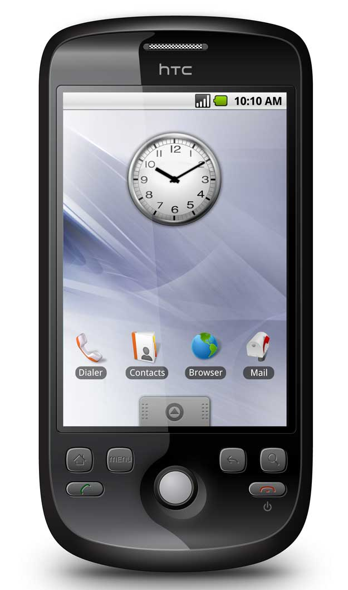

IndexedDB: the good parts
@nolanlawson
@nolanlawson


A story about offline storage
2010: Android was young




Pokédroid
- 440k+ downloads
- 9,700+ reviews
- 4.8 stars
- Top 10 in category "Entertainment"
Why was Pokédroid so popular?
Many alternatives on the web
- Bulbapedia
- Marriland
- Serebii
- GameFAQs
What Pokédroid had that no others had:
OFFLINE!
It's so nice to be able to be on the road playing Pokémon and having a quick reference without all the large guidebooks.
– Google Play review
3.5MB SQLite database

2011: Pokédroid DMCA'd
- Publishing to app store asserts IP ownership
- Nintendo wary of apps
- Web sites okay
In 2011, you could not build Pokédroid using web technology alone.
2009: LocalStorage API
- Strings only
- Synchronous
- Key-value only
- Capped at 5MB
https://hacks.mozilla.org/2009/06/localstorage/
2007-2010: WebSQL Database API
- Thin layer on SQLite
- Asynchronous
- Nearly unlimited storage
- Killed by Mozilla and Microsoft
http://html5doctor.com/introducing-web-sql-databases
https://webkit.org/blog/126/webkit-does-html5-client-side-database-storage
https://webkit.org/blog/126/webkit-does-html5-client-side-database-storage
2010-present: IndexedDB
- NoSQL document store
- Many ideas borrowed from WebSQL:
- Asynchronous
- Nearly unlimited storage
- Transactional (auto-committing)
- Security (per origin)
2010-present: IndexedDB (cont.)
- Storage engine agnostic
- Chrome: LevelDB
- IE/Edge: JetDB
- Firefox: SQLite
- Safari: SQLite (different impl.)
Bad parts
Bad part #1: the API
Solution: use a wrapper
- Dexie
- LocalForage
- PouchDB
- YDN-DB
- indexeddb-promised
Dexie
Bad part #2: browser support

Solution: use a wrapper
- PouchDB
- LocalForage
- YDN-DB
- Dexie w/ IndexedDBShim
PouchDB support
PouchDB blob support
Bad part #4: performance
Solution: use a web worker
IDB in a worker
- Operative.js
- Catiline.js
- promise-worker
- PouchDB "worker" adapter
Gotcha
- No Safari worker support for IDB/WebSQL
- Solution: pseudo-worker
Bad part #4: WKWebView support
WKWebView
- Used in hybrid apps: Cordova/PhoneGap/Ionic
- Used in imposter iOS browsers: Chrome/Firefox/Opera
- "Upgrade" to classic UIWebView
- WebSQL unsupported, IDB is Apple's version
- WK stands for "works, kinda"
Solution: FruitDOWN
- Implementation of LevelDOWN over IDB
- Works in all IDB impls (including Apple's)
- PouchDB adapter
- Barely performant, gets the job done
Another solution: SQLite Plugin (sigh)
- Cordova plugin
- WebSQL-esque impl over native SQLite
- Performance is bad (serialization tax)
- Buggy (doesn't pass Pouch test suite)
- Doesn't fix imposter iOS browsers
WKWebView situation is awful. No good solutions. ¯\_(ツ)_/¯
Where's the good parts?
Basic tech used
- LocalForage
- PouchDB
- Web workers
- pseudo-worker (Safari)
Pokédex IDB
4.0M Chrome / 5.6M Firefox

IndexedDB: rosy future
- Safari "modern IDB" rewrite
- IDB v2 in Chrome/Firefox
- IE/Edge: use the idb-iegap polyfill
IndexedDB has bad parts, but you can work around them to create amazing things.– Nolan Lawson